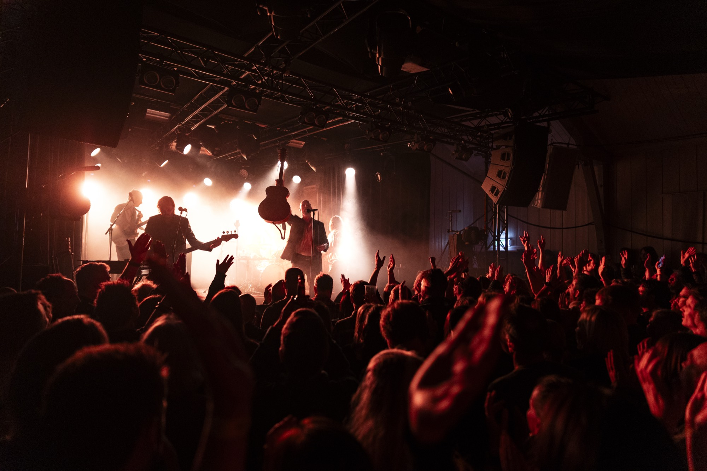

Sceneskift våren 2027 Hvilken sal bør Maja velge?
MET3 Arbeidskrav 2. Bjarte Laa, Petter Garli og Maxime Boudailliez
Hvem: ikke bestemt
Presenter gruppa og spørsmålet: én beslutning, fire handlinger.
Si hva dere kommer til å vise: data, modell, resultater, usikkerhet, råd.
Maja må velge sal for tolv konserter
Konsertene går fra januar til juni 2027. Maja kan leie én av tre saler, eller la være. Hun regner med å kunne ligge ute med
Bilder av salene fra utleiernes nettsider
Hvem: ikke bestemt
Fire handlinger: A, B, C eller avstå. Avstå er et reelt alternativ.
Forskjellen mellom salene er når og hvordan leien betales, ikke bare hvor mye.
Planleggingskostnadene er sunk cost og er ikke med.
B tjener mest, men krever mest penger tidlig
Hver prikk er en handling. Langt opp er høy nåverdi. Til høyre for streken trenger avtalen mer enn rammen. Hold over eller trykk på en prikk for tallene.
Hvem: ikke bestemt
To mål: nåverdi og finansieringsbehov. Behovet er det største beløpet vi ligger ute med.
Bytt scenario og vis hva som flytter seg.
Hold over eller trykk på en prikk for tallene.
Hva om salget svikter eller pakken blir dyrere?
Scenario
Salg, andel av 2026
Pakkepris per konsert
Hvem: ikke bestemt
Tallene kommer fra datatabellene i Usikkerhet, ikke fra en egen modell.
C tåler fall best fordi leien følger salget.
Vis Lav etterspørsel: A går over rammen, C holder akkurat.
Anbefalingen nederst følger valget: høyest nåverdi blant avtalene som holder rammen og gir pluss.
Utkast
Rådet etter caset:
Før Maja signerer
Rigg & Ro bekrefter pakkeprisen. Ved 80 % salg holder C rammen så lenge pakken koster under 61 377 kr.
Rammen på
Skarvkaien garanterer 450 salgbare plasser i oppsettet vi skal bruke.
Hvem: ikke bestemt
Regel 1: høyest nåverdi blant handlingene som holder rammen i basis og ved lav etterspørsel.
Pakkeprisen er kjent før signering, så den er et vilkår og ikke en risiko.
Fjern «Utkast» når gruppa har formulert rådet selv.
Overgang: «Dette er rådet innenfor caset. Men caset krever at alle tolv går i samme sal.»
Utenfor caset
Caset krever én sal for hele programmet. Konsertplan, vår egen modell, lar Maja velge sal konsert for konsert. B har fast sesongleie og er holdt utenfor.
Hvem: ikke bestemt
Trykk videre: billettene snus til salen som gir mest, og tallene teller opp.
A tar de mellomstore konsertene, C de minste og de største. Fortsatt innenfor rammen.
Krever at utleierne godtar enkeltkonserter. Det er ikke en del av tilbudene.
I Konsertplan: trykk «Beste blanding» i programmet. «Tilbake til presentasjonen» går rett til avslutningen.

Takk for oss Spørsmål?
Rådet etter caset:
Hvem: alle
Ha arbeidsboka klar. Sensor kan be dere endre en forutsetning.
Piltaster for å bla. N viser notater. F slår forklaringstekst av og på.